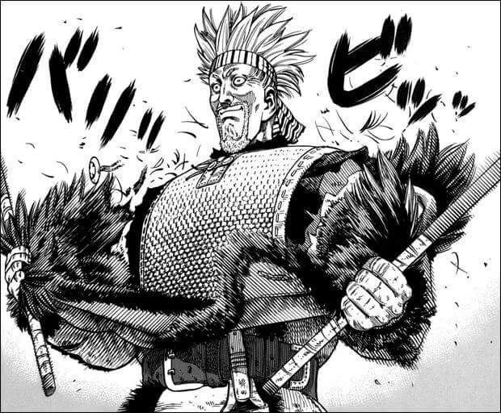
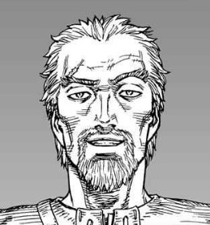
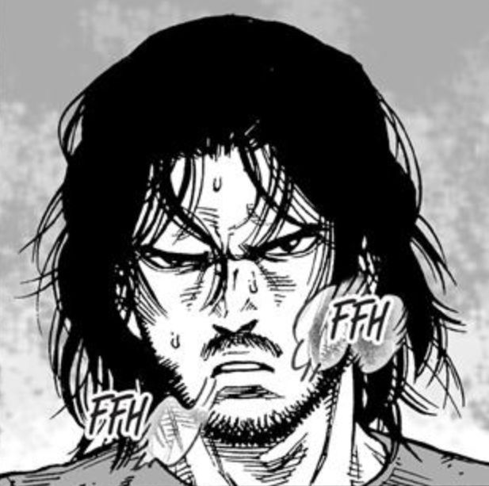
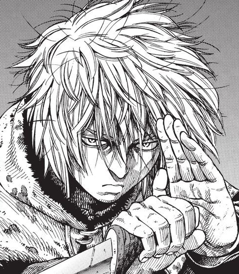

Os personagens mais fortes de Vinland Saga
aluno ucb
1. Thors, o troll de Jon

Thors foi o guerreiro mais forte, mais corajoso e mais conhecido em todo o mundo Viking. Ele foi o único homem que conseguiu derrotar Thorkell, o Alto, em combate individual. Ele era um Jomsviking e apenas pela força das armas e habilidade em combate conseguiu o posto de capitão quando ainda tinha 25 anos. Sigvaldi, o comandante dos Jomsvikings, Sigvaldi, gostou tanto dele que concordou que Thors se casasse com sua filha, Helga.
2. Thorkell, o alto
Thorkell era um colega comandante Jomsviking e amigo de Thors. No entanto, ele desertou quando a guerra acabou porque considerava o exército 'chato', pois era invencível. Portanto, juntou-se às forças inglesas por considerar isso mais interessante porque os ingleses eram 'fracos e patéticos' e ele estava cansado de estar do lado que sempre saía vitorioso, o que para ele era incontestável, desinteressante e sem sentido.
3. Askeladd, Lucius Artorius Castus
Askeladd afirmou que era descendente do lendário guerreiro Lucius Artorius Castus por parte de mãe. Esta última idolatrava a história de Artorius e deu ao filho o nome dele. O apelido “Askeladd” veio de “Ashen Lad”, já que ele estava constantemente coberto de cinzas de vários empregos quando criança.
4. Snake
Snake é compassivo e um homem de razão. Durante o arco da Fazenda de Ketil, Snake frequentemente mostra estar genuinamente preocupado com outras pessoas, tanto homens livres quanto escravos. Ele salvou Thorfinn e outros escravos inúmeras vezes de tratamento brutal com ambos os motivos e sua intimidante habilidade de combate. No entanto, devido à época em que foi criado, ele ainda vê os escravos como inferiores aos outros e acredita abertamente que seus senhores podem fazer o que quiserem com os escravos. Ele também não expressa preocupação com o fato de crianças serem espancadas por roubar comida, mesmo que isso tenha sido feito para sobreviver.
5. Thorfinn, filho de Thors
Thorfinn nasceu na Islândia no inverno de 996, para onde sua família fugiu depois que Thors decidiu abandonar seu estilo de vida guerreiro e, em virtude disso, também os Jomsvikings. Ele cresceu sem saber sobre o passado de seu pai como guerreiro ou sua conexão com os Jomsvikings.